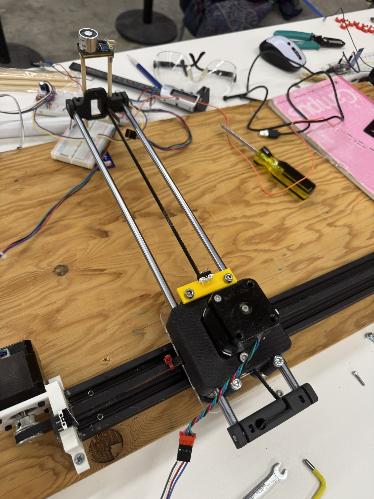
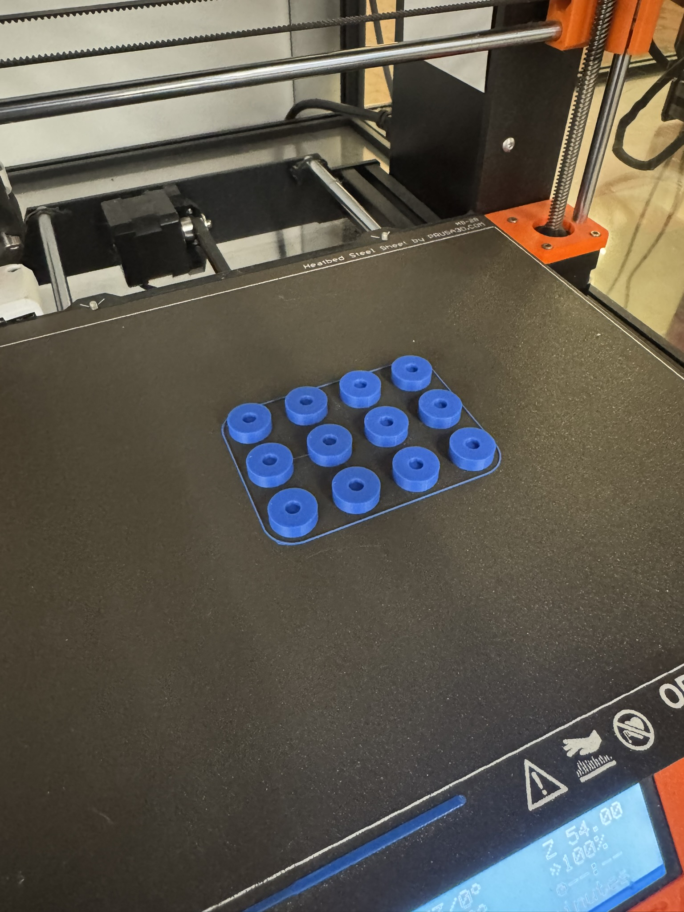
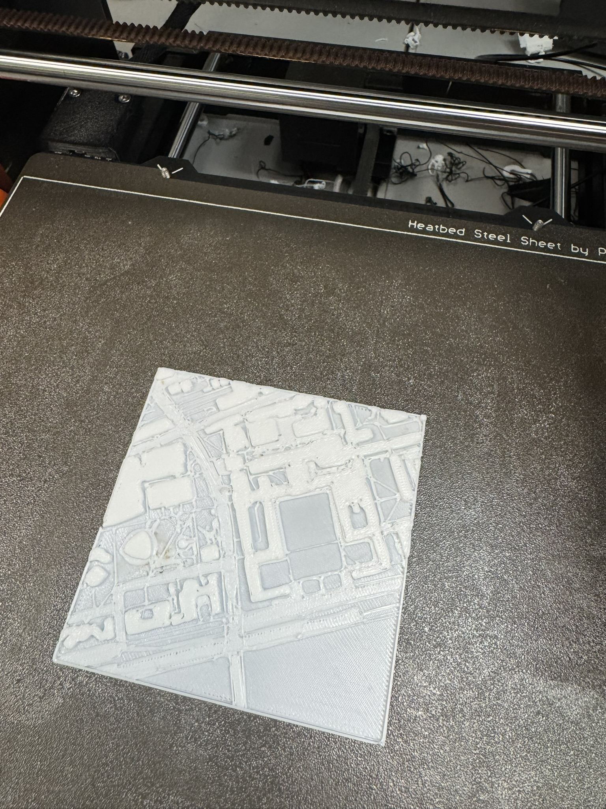

Physical MBTA Train Tracker v1
calling all transit nerds!
Project Details / Background
This was my final project for Harvard's PS70 Intro to Digital
Fabrication class. The process is (will be) documented more on my
website for that class, but to give a summary: I wanted to create
some sort of display that would show the real time locations of the
MBTA trains. Originally, I was going to go with simple LEDs, but I
was challenged to make the display mechanical :)
The train location data is pulled from the MBTA's API, and the
trains are displayed on a laser-cut map of Boston/Cambridge. As you
can see, I actually narrowed the scope down to just a few stops on
the Red Line (Davis, Porter, Harvard, MIT). I felt I was pressed for
time, but it ended up working really well, so I probably could've
committed to the whole line or including other lines. Underneath the
map, a gantry system moves an electromagnet that powers on and off
to slide the trains to their location the map. I figured this was
the easiest and most cost-efficient way to move the trains around,
since the T isn't exactly known for its speed.
I programmed it using an ESP32, driving the gantry system with timer
pulley belts and stepper motors + drivers. Calibration was done with
limit switchesThe little train icons are 3d-printed, and they have a
magnet press-fit into them. Overall, a super fun project, got to use
plenty of the tools I learned throughout the semester (laser cutter,
3d printer, band saw, etc.). I really want to iterate over this
project in the future, creating a smaller, cheaper display that
actually includes the rest of the map. Maybe I could hang it up or
display it in my apartment. From there, maybe I'd look at adding the
commuter rail network or buses.
Check out this video below to see it in action!
it might not be done yet, i still need to edit it...
Check out this video below to see it in action!
it might not be done yet, i still need to edit it...
Image Gallery

earlier stage where moving the gantry system was tested. notice
the limit switches, the makeshift holder for the electromagnet,
and all the red trains in the back hehe

the plenty of blue line train bases i had prepared prior to scope
narrowing
 3d model of the stepper motor + pulley mounts i designed,
together with a 30x60 aluminum t-slot
3d model of the stepper motor + pulley mounts i designed,
together with a 30x60 aluminum t-slot

before i transitioned to the wooden map, i had considered 3d
printing all segments of the map and sticking them together like
puzzle pieces, so i could capture building shapes too.